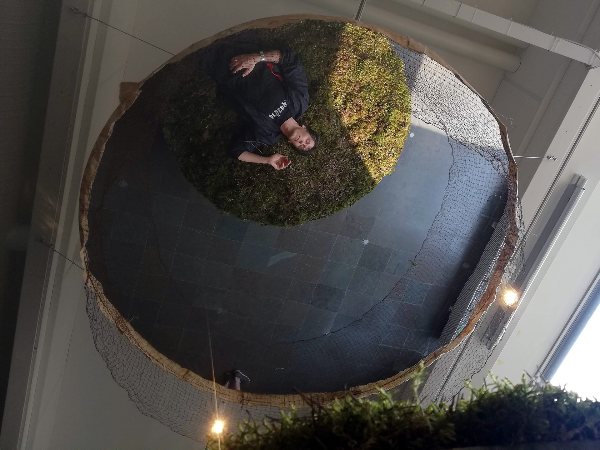
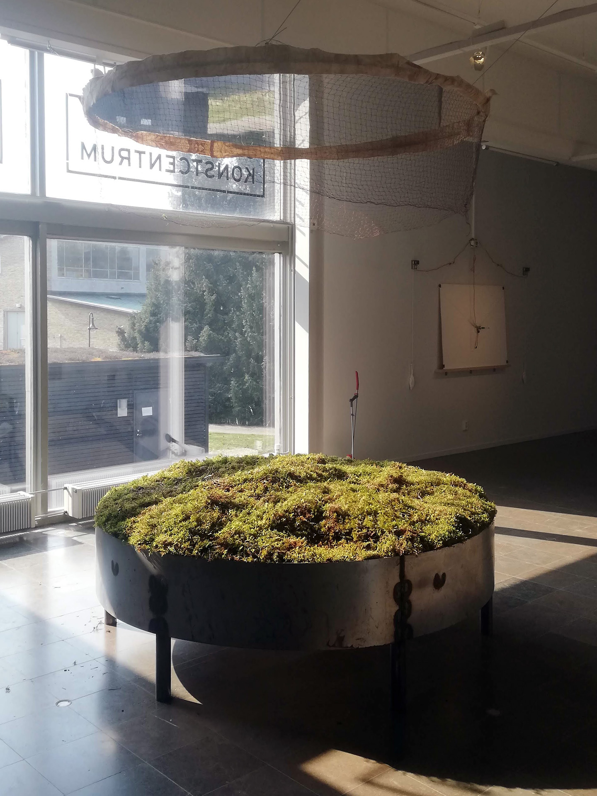
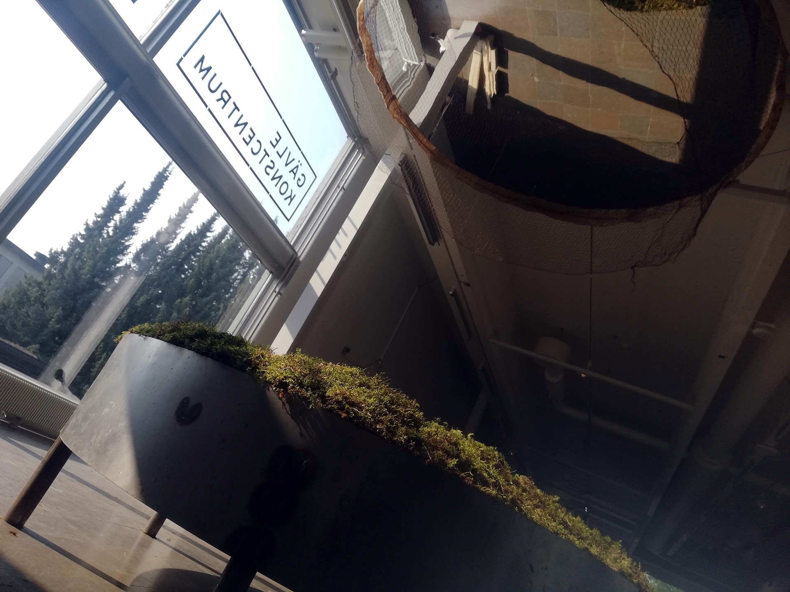
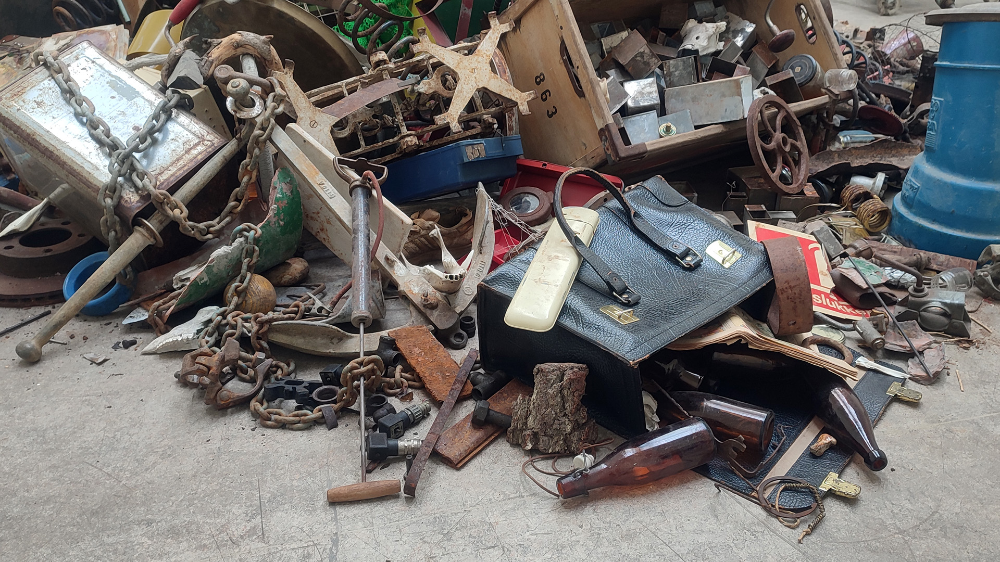
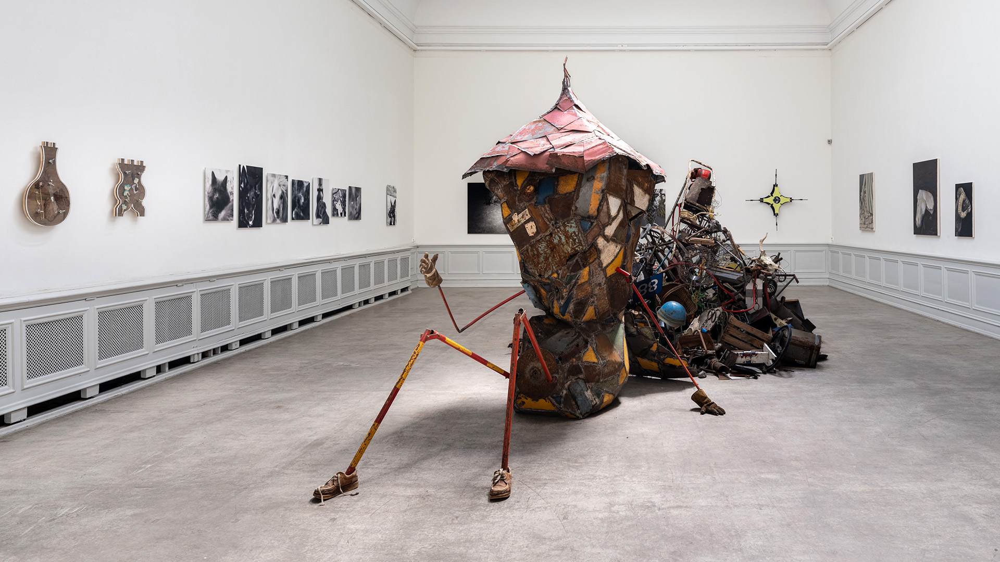
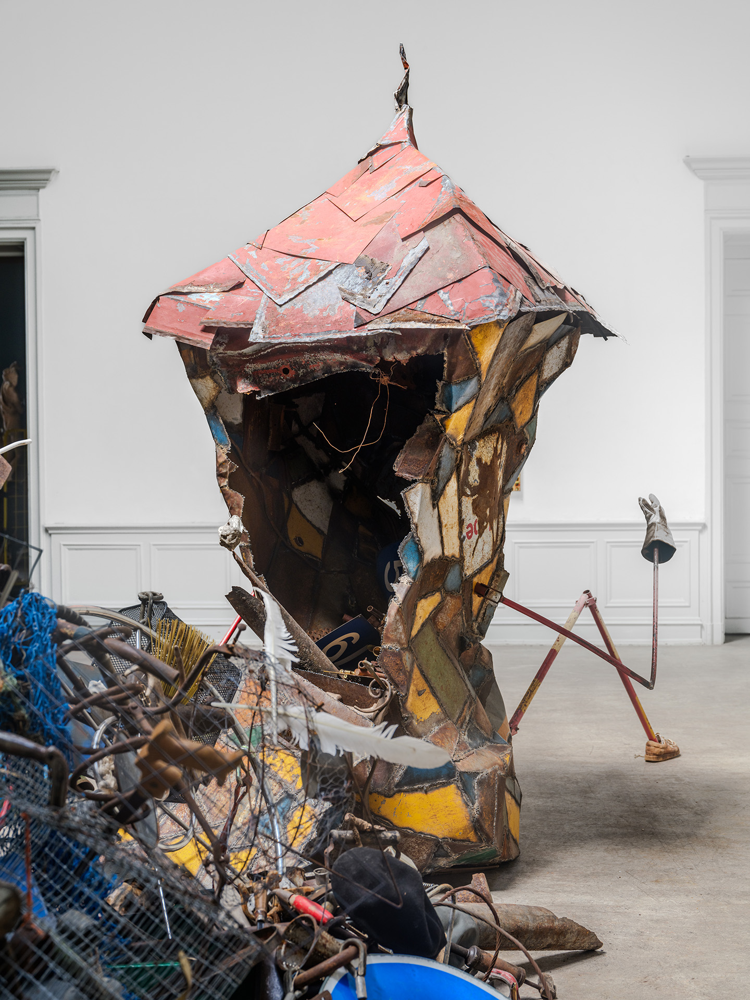
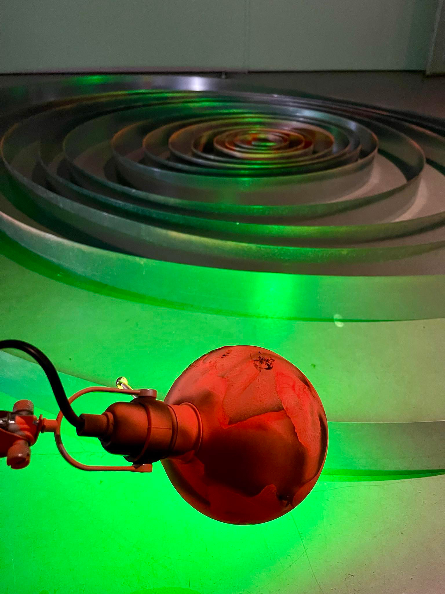
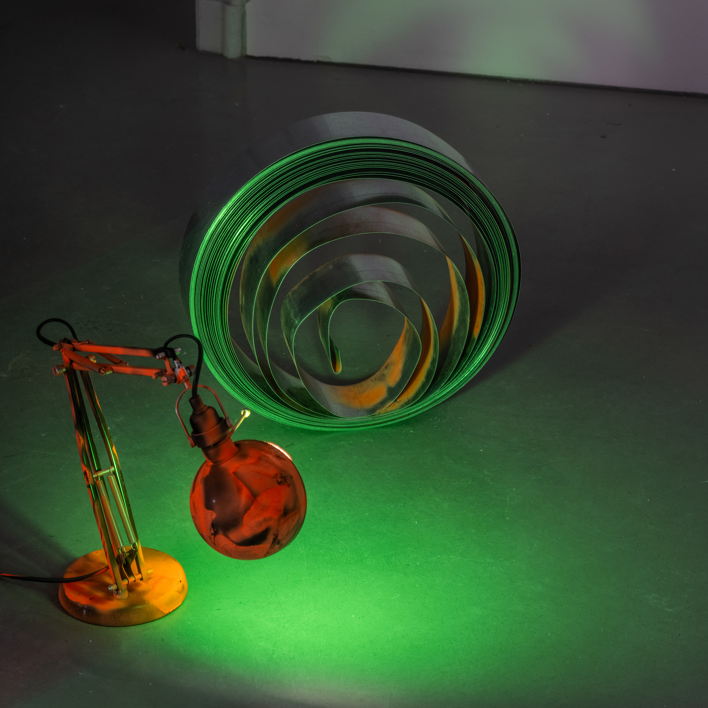
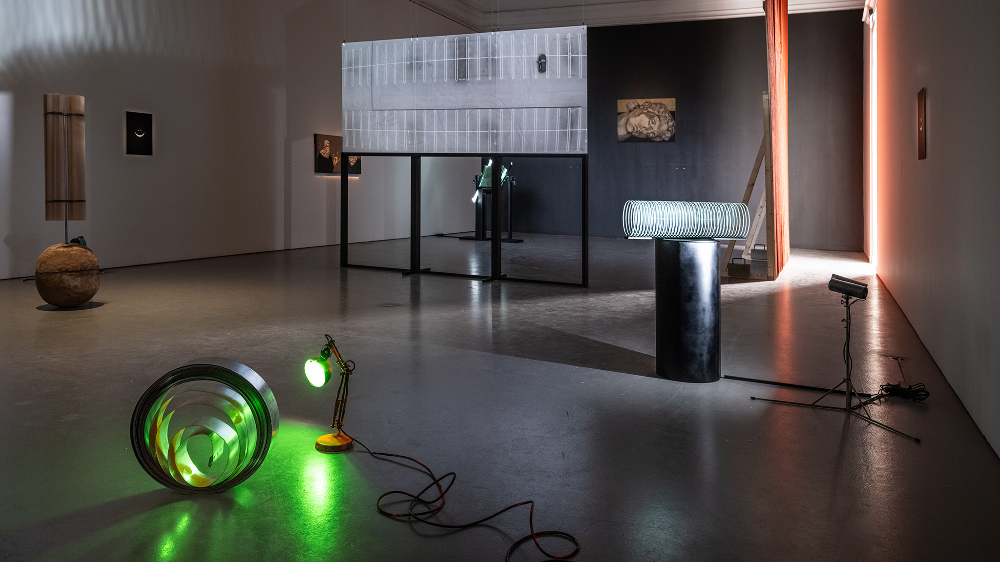

Lior Nønne Malue Hansen is a Danish artist working with large-scale sculpture and installations that explore ecology, politics,
poetics, psychology and the contradictions of being human in late-stage capitalism. Her practice engages discarded materials to
question systems of value and function. Merging poetic absurdity with tactile pcision, the works often resemble a surreal collision
between amusement park and junk yard — evoking both vulnerability and resilience. Educated at the Royal Institute of Art, Stockholm,
she collects, rebuilds and reflects, constructing layered worlds that ask not only what it means to feel, but how we make sense of
it all.
I et forsøg på at få verden til at give mening bedriver jeg en skabende praktik i løs form. Med de værktøjer, materialer og
tilfældigheder som jeg ligger under for gør jeg det bedste jeg kan for at udleve min del af menneskets indre og ydre kamp imod det
kaos som er universet, måske endda selve livet, på en måde som er sensorisk tiltalende.
Year: 2020. Material: Damaged trampolines, a cancelled Olympics, a global pandemic.
STRIVING NOT TO PLEASE
BUT TO OUTSMART THE GODS
WE HAVE BEEN ACTING OUT
THE OLDEST PLAY OF HUBRIS
KNOWN TO MODERN MAN
CRAVING ABSOLUTE PERFECTION
AND THE POWER OF THE CROWN
LOOKING BOLDLY TO THE EAGLES
FLYING EVER SO HIGH AND FREE
NEMESIS HIT US LIKE A BAT
MAKING OUR INTERDEPENDENCY
OUR COLLECTIVE ACHILLES HEEL
There lies some beauty
In the ambivalence
Of recreational areas
Atop landfills and polluted ground
I like the idea
Of a collective healing
And I wonder
If us embracing Mother Earth
Where she hurts the most
Will allow her love
To seep into the brokenness
Of our modern ways
And bring round a sense of
Unity in diversity
We have clearly lost



ĀLAYA-VIJÑĀNA | MAYBE MY SANCTUARY FOR THE BENT AND THE BROKEN IS ACTUALLY A PENITENTIARY FOR THE DAMAGED AND THE DUMPED AND I NOT
THE WARDEN BUT JUST ANOTHER OBJECT IN THIS STOREHOUSE OF TRAUMA
Year: 2023. Materials: 1000kg mixed material from the artist’s own collection, (potentially misconceived) care, and a wish for
second chances.
They say care is heavy work.
Mine weighs a ton.
Ālaya-vijñāna (storehouse consciousness) is a term from Buddhism. It is the place in our (sub/un)consciousness where unprocessed
trauma is stored throughout lifetime after lifetime, and from where our core behavioural patterns are shaped. (selfportrait)

Implode / explode
Year: 2024. Performative installation of metal sculpture.
Before and after every action
Is a space of liminality
Use it wisely

An inflexible flex | When told to jump ask why
Year: 2024. Materials: Old trampoline parts, straps, fluorescent spray paint.
My paper-documented inflexible brain bends over backwards to jump through the bureaucratically eroding loopholes of the societal
gameplay to eliminate entropy in the polished introverse named Sweden. Breaking the norms is a full-time job on a no time dime.
All that was born must die | Flammable fish shipped by air mail
Year: 2020. Materials: Collected material.
Let me show you my collection
My cabinet of horror, love and curiosity
A space where tactility is the common tongue
And non-sense takes precedence
Here hierarchy is nothing but random selection
Of poethic aesthetics and eclectic taste
All that fits will survive